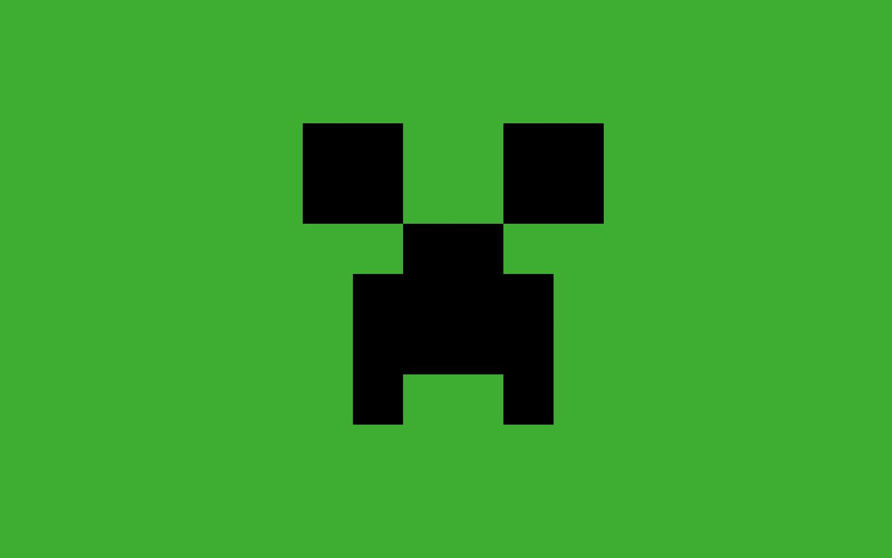

<div class="flex">
    <button id="ham-button" class="mr-3 ham transition-all duration-300 ease-in-out" type="button">
        <svg id="ham-sidebar" xmlns="http://www.w3.org/2000/svg" fill="none" viewBox="0 0 24 24" stroke-width="1.5" stroke="currentColor" class="w-6 h-6">
            <path stroke-linecap="round" stroke-linejoin="round" d="M3.75 6.75h16.5M3.75 12h16.5m-16.5 5.25h16.5" />
        </svg>
        <svg id="close-sidebar" xmlns="http://www.w3.org/2000/svg" fill="none" viewBox="0 0 24 24" stroke-width="1.5" stroke="currentColor" class="w-6 h-6 hidden">
            <path stroke-linecap="round" stroke-linejoin="round" d="M6 18L18 6M6 6l12 12" />
        </svg>                    
    </button>
    <div id="search-div" class="flex-col w-1/2 hidden sm:flex transition-semua">
        <form>   
            <label for="default-search" class="mb-2 text-sm font-medium text-gray-900 sr-only dark:text-white">Search</label>
            <div class="relative">
                <input type="search" id="default-search" class="block w-full p-4 text-sm text-gray-900 border border-gray-300 rounded-lg bg-gray-50 focus:ring-blue-500 focus:border-blue-500 dark:bg-gray-700 dark:border-gray-600 dark:placeholder-gray-400 dark:text-white dark:focus:ring-blue-500 dark:focus:border-blue-500" placeholder="Search" required>
                <button type="submit" class="text-white absolute right-2.5 bottom-2.5 bg-blue-700 hover:bg-blue-800 focus:ring-4 focus:outline-none focus:ring-blue-300 font-medium rounded-lg text-sm px-4 py-2 dark:bg-blue-600 dark:hover:bg-blue-700 dark:focus:ring-blue-800">
                        <svg class="w-4 h-4" aria-hidden="true" xmlns="http://www.w3.org/2000/svg" fill="none" viewBox="0 0 20 20">
                            <path stroke="currentColor" stroke-linecap="round" stroke-linejoin="round" stroke-width="2" d="m19 19-4-4m0-7A7 7 0 1 1 1 8a7 7 0 0 1 14 0Z"/>
                        </svg>
                </button>
            </div>
        </form>
    </div>

    <div class="flex sm:hidden ml-4 transition-semua">
        <button id="button-show-search" class="text-black right-2.5 bottom-2.5">
            <svg id="search-icon" class="w-4 h-4" aria-hidden="true" xmlns="http://www.w3.org/2000/svg" fill="none" viewBox="0 0 20 20">
                <path stroke="currentColor" stroke-linecap="round" stroke-linejoin="round" stroke-width="2" d="m19 19-4-4m0-7A7 7 0 1 1 1 8a7 7 0 0 1 14 0Z"/>
            </svg>
            <svg id="close-icon" xmlns="http://www.w3.org/2000/svg" fill="none" viewBox="0 0 24 24" stroke-width="1.5" stroke="currentColor" class="w-6 h-6 hidden">
                <path stroke-linecap="round" stroke-linejoin="round" d="M6 18L18 6M6 6l12 12" />
            </svg>
        </button>
    </div>
    <div class="flex flex-row w-full justify-end items-center">
        <div class="flex pr-4">
            <button class="rounded-full bg-black">
                <svg xmlns="http://www.w3.org/2000/svg" fill="none" viewBox="0 0 24 24" stroke-width="1.5" stroke="currentColor" class="w-6 h-6">
                    <path stroke-linecap="round" stroke-linejoin="round" d="M14.857 17.082a23.848 23.848 0 005.454-1.31A8.967 8.967 0 0118 9.75v-.7V9A6 6 0 006 9v.75a8.967 8.967 0 01-2.312 6.022c1.733.64 3.56 1.085 5.455 1.31m5.714 0a24.255 24.255 0 01-5.714 0m5.714 0a3 3 0 11-5.714 0" />
                </button>
            </span>
        </div>
        <div class="flex flex-col items-end">
            <div class="flex justify-center items-center">
                
                <button class="p-2">
                    <svg xmlns="http://www.w3.org/2000/svg" fill="none" viewBox="0 0 24 24" stroke-width="1.5" stroke="currentColor" class="w-4 h-4">
                        <path stroke-linecap="round" stroke-linejoin="round" d="M19.5 8.25l-7.5 7.5-7.5-7.5" />
                    </svg>
                </button>
            </div>
        </div>
    </div>    
</div>


